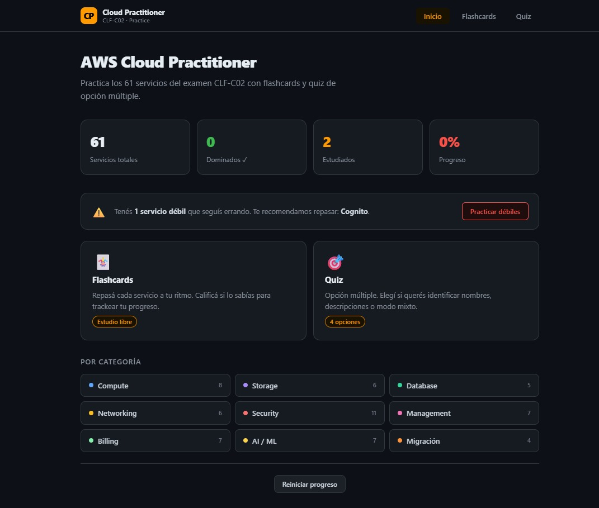

DevOps infrastructure, CI/CD pipelines and web apps — built from scratch.
Infrastructure, pipelines and observability — built from scratch.
Full cloud infrastructure for a DevTools platform on AWS. Automated deployment with Terraform + Terragrunt, Kubernetes orchestration via EKS, zero-downtime rolling updates, and a complete GitHub Actions CI/CD pipeline — from PR to production.
Portfolio website containerized with Docker and served through NGINX. Built as part of a 90-day DevOps challenge — from static site to production-ready container.
Infrastructure automation with Vagrant and VirtualBox to provision an Ubuntu VM running Apache. Deploys a 3D galaxy web app with automated server configuration.
